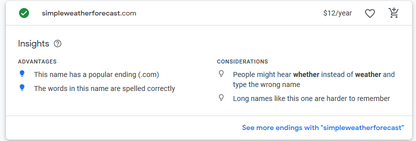

Simple Weather Forecast (simpleweatherforecast.com)
Purpose
The purpose of this website is to inform the user about the weather,
so our audience can better prepare for their day.
-Simple Weather Forecast
Logo

The purpose of this website is to inform the user about the weather,
so our audience can better prepare for their day.
-Simple Weather Forecast